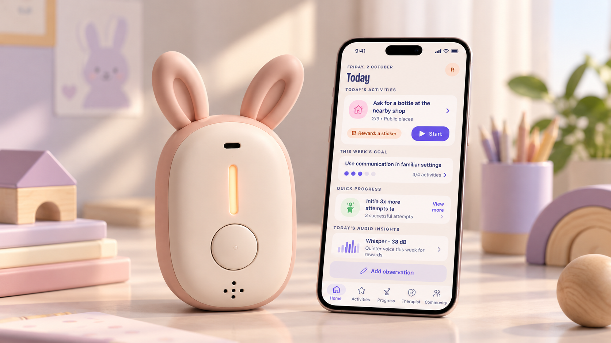
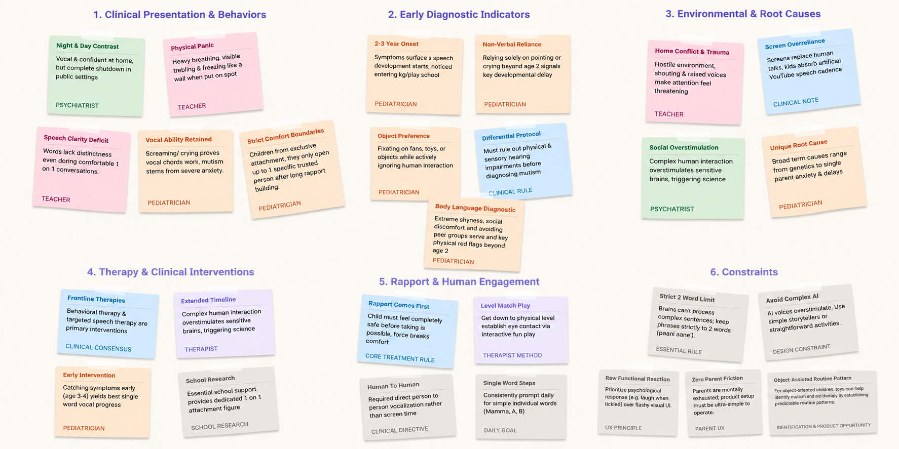

Designing for Low Effort Communication for Children with Selective Mutism
A UX Research project

0 weeks123
Research
Ideation
Concept development
Team of 4
My part — Interviewed a clinician, understood the research insights, mapped features, created the information architecture, and developed the concept.
The starting point
Selective mutism isn’t a choice
Selective mutism is an anxiety-related condition in which a child can speak comfortably in some settings but consistently finds it difficult or impossible to speak in others.
One child. Two settings.
HomeCommunicates freely
→
School / unfamiliar settingStruggles to speak
Approximately1 in 140 young children are affected by selective mutism.
A team member knew a child with selective mutism whose parents understood the condition. Seeing how anxiety affected his ability to communicate made us question what everyday communication felt like beyond the moments when support was available.
What we learned about the condition
But what’s the cause of selective mutism?
There is no single known cause of selective mutism. Temperament may make some children more susceptible to anxiety, but it does not cause the condition on its own. In certain social situations, the expectation to speak can intensify anxiety until the child freezes.
Possible influenceSensitive or cautious temperamentMay increase susceptibility to anxiety
ContextA social or speaking situationCan trigger an anxious response
Added pressureExpectation to speakCan intensify that response
What may happenUnable to speakThe child may freeze
These are possible influences, not a fixed sequence or a single explanation for every child.
About causes, anxiety and the freeze response: NHS.
The child’s context
The same child, different environments
The child stays the same, but the environment changes. Familiarity, the people around them and the expectation to answer can all affect how comfortable communication feels.
Familiar peopleMore comfortable speaking
SchoolSpeaking may feel expected
Same childWhat changes is the context
Unfamiliar peopleAnxiety may rise
Social situationsMay struggle to speak
What this revealed
The same child can experience communication very differently depending on the environment around them.
The people around the problem
Who is involved in supporting them?
We used personas and empathy mapping to look beyond the moment of silence: what the child experiences, what the parent tries to support, and what the therapist needs to understand across settings. School remains part of that wider environment.
Child · at the centre
Kian
Wants to join in, draw and share stories.
Experiences
At home he talks freely; at school he may know the answer but feel unable to say it. He may nod or point instead.
Needs
Space to participate at his own pace, without being pushed to speak.
“I know what I want to say... but the words just won’t come out.”Child persona statement
Parent · everyday support
Rakshitha
Tries to help her child feel safe and understood.
Experiences
Works with teachers, notices small changes and worries when others misunderstand her child.
Needs
Practical, low-pressure guidance and a clearer way to recognise progress.
Therapist · clinical guidance
Dr Priyanka
Builds a plan from observation and family feedback.
Experiences
Needs to understand the child’s experiences at home and school, not only in a session.
Needs
More consistent information shared between family, school and clinical support.
What their perspectives made clear: Kian needs room to participate; Rakshitha needs confidence in how to help; Dr Priyanka needs a fuller picture of what happens between sessions.
Scope & assumptions
Parent awareness: Parents are already aware that their child has selective mutism.
Existing therapy: The child is receiving guidance from a therapist who assigns activities.
Product scope: The app supports everyday practice and continuity between therapy sessions. It does not diagnose selective mutism or replace professional therapy.
Kian’s experience over time
What does Kian’s everyday life look like?
This illustrative journey follows Kian’s experience across the nine stages explored in the project. It is a hypothesis, rather than one observed child’s timeline.
01Before school
Talks normally with family. Laughs, plays and asks questions.
02Starts preschool / school
Suddenly becomes silent around teachers and classmates. Wants to answer but freezes.
03School continues
Uses gestures, nodding and pointing. Avoids situations where speech is expected. Anxiety increases daily.
04Search for answers
Doesn’t understand why speaking feels impossible.
05Assessment
Meets unfamiliar professionals. May not speak during assessment.
06Therapy begins
Starts with non-verbal communication. Builds trust slowly.
07Between therapy sessions
Tries communication exercises in real situations. Some days succeed, other days freeze.
08Gradual improvement
Starts whispering, speaking to one trusted adult, then small groups.
09Long-term confidence
Speaks comfortably in most situations. Some anxiety remains.
What happens in these everyday moments?
A closer look
Inside one communication moment in Kian’s life
Between therapy sessions, Kian may face a question at school. This example follows what can happen in that moment; it is not one observed event.
SituationAt school, someone asks Kian a question.
Wants to answerHe knows what he wants to say.
ExpectationSomeone waits for him to speak.
AnxietyThe attention makes responding harder.
Speaking becomes difficultHe may freeze even when he wants to take part.
Another responseHe may nod, point or stay silent.
What this moment reveals
The child may want to participate, but being expected to speak can increase the pressure to communicate.
Three views of the same experience
How do their experiences connect?
Kian, Rakshitha and Dr Priyanka each encounter a different part of the same everyday communication experience.
Child
Kian
Experiences the pressure of the question directly, even if his response is a nod, a gesture or silence.
Parent
Rakshitha
Sees and supports everyday attempts, but does not see every moment Kian encounters in other settings.
Therapist
Dr Priyanka
Uses observations, family feedback and sessions to understand Kian’s progress and guide support.
Each person sees a different part of Kian’s experience. The communication moment is difficult for him; the wider challenge is connecting what happens across the people who support him.
The support gap
What happens when the child leaves the therapy room?
The therapist can set small goals and guide a plan. But communication moments happen at home, school and in social situations. Parents and teachers spend the most time with the child; when their observations and approaches are not connected, support can become uneven. That need for continuity shaped the design opportunity.
What the research changed
Safety comes before speech
“Children don't need to be taught to speak, they need to feel safe enough to speak.”Clinical psychologist interview
Existing approaches such as CBT, graded exposure, stimulus fading, shaping, play and rapport support manageable steps rather than demanding speech on cue. Parent guidance and school collaboration help carry that support across settings. Together with the connected perspectives, this shifted the focus from eliciting speech to creating comfort, recognising small attempts and helping adults support practice in everyday life.
01Rapport comes first
A child needs comfort and trust before a new communication step.
02Small steps matter
Gestures, whispers and attempts belong in the picture of progress.
03Human to human
The product should support real interaction rather than replace it.
04Low effort for parents
Guidance and logging must fit daily life.
05Familiar objects help
Soft, predictable objects can make practice feel more approachable.
06Support must connect
Home, school and therapy need a shared sense of what helps.

The design opportunity
How might we support children beyond the therapy room without creating another source of pressure?
↓
Concept exploration
We then started exploring concepts
With comfort and continuity as priorities, we explored four ways to make support feel familiar and usable in a child’s day.
Concept 01
Communication Companion
A friendly object that encourages and appreciates communication attempts.
Concept 02
Adaptable to Environment
One core device used in different ways across school, home and play.
Concept 03 · Selected
Personal Tracker + App
A compact wearable that records everyday moments and connects to an app so progress can be seen over time.
Concept 04
Sling Type Bag
A wearable bag that makes the device part of everyday carry.
Choosing a direction
Designing for real-world use
We compared the four directions against what the research made important: low pressure, everyday relevance, visible small steps and connected adult support. Concept 03 offered the clearest way to carry support into daily life while making small attempts visible over time, so we chose the personal tracker and app.
Low pressureEveryday useSmall progressChild comfortAdult support
So what does the selected concept look like in practice?
The chosen system
A connected support system for everyday communication
That choice became a phygital system: a child-facing clip-on companion paired with an app for activity guidance and progress. We explored animal-inspired forms to make the companion feel more familiar and comforting.
ChildA familiar companion during small activities in real settings.
ParentGuidance for the activity and a place to record what happened.
TherapistGoals and progress information to guide the next step.
But why an animal-shaped product?
Our research explored what children with selective mutism may find comforting, and animals emerged as a potential source of comfort. This insight informed our decision to explore an animal-inspired product, with different animal forms offering children a choice.
Turning the concept into an experience
So how could this concept work in everyday life?
The concept needed to extend beyond the therapy room without making communication another source of pressure. We explored a simple cycle connecting therapist guidance, everyday interaction and feedback.
GuideTherapist sets a goal→PracticeParent opens the activity→ExperienceChild tries it in real life→LearnProgress informs the next step
TherapistSet a small goal
The therapist reviews progress and selects a manageable activity with guidance for the parent.
Parent + childTry it together
The parent introduces the activity and the child tries it in an everyday setting.
ReviewPlan what comes next
The attempt offers information about context, comfort and progress to inform the next step.
The flow clarified what the app needed to make easy to find, record and review.
From flow to structure
Turning the support system into an app
The flow shaped the app’s key destinations: guidance needs to be easy to find, attempts need a place to be recorded, and progress needs to be available when planning the next step.
HomeToday’s activity, current goal and quick progress.
ActivitiesAssigned tasks, details, instructions and history.
ProgressAttempts, situations and patterns over time.
TherapistGoals, recommendations and session information.
CommunityParent experiences and resources.
Profile & settingsChild preferences, rewards and device settings.
Translating the concept into task flows
The Guide → Practice → Experience → Learn loop defined how the support system would work as a whole. To translate this into the app, I mapped five key task flows, including activity completion, progress tracking, therapist guidance and community resources.
01
Completing an Activity
Parent helps the child complete an assigned activity and records the results.
02
Reviewing Progress
Parent reviews communication patterns and progress over time.
03
Therapist Guidance
Parent reviews therapy goals, results and recommendations for next steps.
04
Community Resources
Parent explores other parents’ experiences, videos, blogs and articles.
05
Profile & Device Settings
Parent manages the child’s profile, device settings and preferences.
The final experience
Designing the interface around small steps
To keep practice manageable, the prototype moves from Home to a therapist-assigned activity, through the attempt, and then to a saved record. The situation, goal and instructions stay visible so a parent can support the child without having to guess what to do.
High-fidelity prototype for Task Flow 1 — Completing an Activity
The goal was never to make speaking a score. It was to make support easier to carry into everyday moments.
What comes next
Testing whether the concept works in real life
The concept still needs validation in use. The next step is to check whether parents can complete and record an activity without help, whether the companion feels calm and comfortable for a child, and whether therapists find the progress information useful for planning.
ParentCan the activity be started and recorded without help?
ChildDoes the companion feel comfortable, clear and calm?
TherapistIs the progress useful when planning the next goal?
 Concept 01
Concept 01 Concept 02
Concept 02 Concept 03 · Selected
Concept 03 · Selected Concept 04
Concept 04